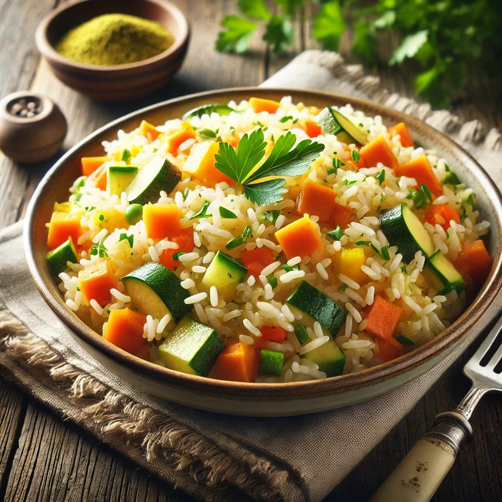

Vegetables with rice

Ingredients
- 1 cup rice (white or brown)
- 2 cups of water
- 1 tbsp olive oil
- 2 cloves of garlic
- 1 carrot
- half a bell pepper
- half a zucchini
- half a tsp of paprika
- salt & pepper
How to make:
- Bring 2 cups of water (or broth) to a boil. Add the rice, lower the heat, cover, and cook as per package instructions.
- In a pan, heat olive oil or butter over medium heat. Add garlic and cook for about 30 seconds.
- Stir in the carrot, bell pepper, and zucchini. Cook for about 5 minutes, stirring occasionally.
- Add salt, pepper, turmeric or paprika, and soy sauce if using. Mix well.
- Add the cooked rice to the pan with the veggies. Stir everything together and cook for another 2 minutes. Enjoy!